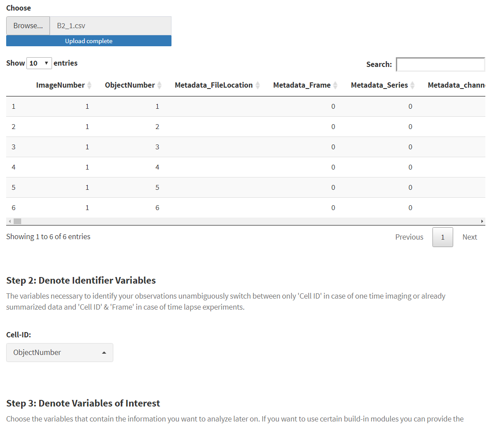
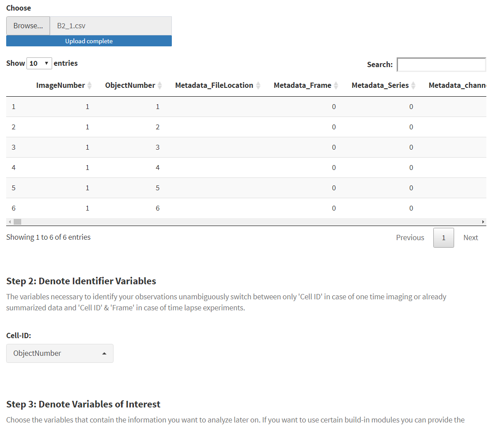

The center of cypro is an S4-object of class cypro. It contains all information about the experiment set design as well as the data. This tutorial explains the basic of its structure and most importantly how to create it.
1. Experiment design
Every analysis initiation in cypro begins with the function designExperiment(). It opens an interactive application as shown in Figure 1.1 in which the experiment design can be specified. This includes the experiment type (timelapse or one time imaging) and the well plate design.
library(cypro)
# call the function (without any argument specification)
object_design <- designExperiment()Figure 1.1 Interface of the function designExperiment()
1.1 Overall Information
This part includes basic information as the name of the experiment and a folder in which to store the object by default. Additionally, you provide an example file and denote the name of the identifier variables (Cell ID and in case of timelapse experiments needed Image Frame).
 
Figure 1.2 Provide overall information and an example file
1.2 Imaging Set Up & 1.3 Experiment Phases
Providing information about the imaging set up is only necessary in case of timelapse experiment data. (The set up of one time imaging will always be the same - one image).
Figure 1.3 Imaging set up not required.
In case of timelapse experiments you can specify the set up and, in particular, if any kind of timedisplaced changes in the conditions have taken place during the imaging process. In cypro we refer to that as phases. In this example the experiment was split in two phases whereby the second phase started from the ninth image.

Figure 1.4 Imaging set up and experiment phases must be specified.
1.4 Well Plate Set Up
The fourth module of designExperiment() lets you design the well plates used for the experiment including cell line and condition.

Figure 1.5 Design well plates interactively.
You can design as many well plates as your experiment design contained and add them repeatedly with the ‘Add Well Plate’ button. Once you are done. Click on save ‘Save & Proceed’ and then on the ‘Return Celltracer Object’ that should have turned green by now.

Figure 1.6 Save the experimetn design.
2. Load Data
The experiment design is now stored in the cto-object called object_design. You can’t do any analysis and visualization with it yet as it does not contain any loaded data. To load data use the function loadData().
loadData() again opens a user interface. Here you can assign a folder to each well plate designed in the previous step. cypro will then skim the folder and all its subfolders for data files that match the well names and the covererd area of the well. It takes the folder (here represented by ‘~/’) you assign to every well plate and skims its content for files that end according to the following syntax:
- ~/some_text_**‘Well’_‘Covered-Area-Index’.’filetype’**
Valid examples would be:
- ~/A1_1.csv
- ~/this_is_a_valid_filename_G3_2.xlsx
- ~/hidden/in/subfolders/H2_2.csv
Invalid examples:
- ~/A1-1.csv (does not use _ as a separator)
- ~/does_not_end_A1_1_accordingly.xls (the file name does not end with the well description)

Figure 2.1 The interface of loadData()
Once the folder is assigned cypro evaluates by well how many of the expected files were found and indicates that by plotting the well plate colored according to the file availability. For instance, the well plate designed in ‘1.4 Well Plate Set Up’ contained files for rows A-H and columns 1-6. The input box ‘Covered Areas per Well’ was set to 3. cypro therefore expects to find three files for every well named according to the syntax mentioned above. Depending on the number of matching files found one of the four colors appear:
Green: All files were found for that well.
Yellow: Some files were found for that well.
Red: No files were found for that well.
Blue: More than the expected number of files were found. This can happen if files are stored in subfolders and accidentally were named equally.
For instance files ~/subfolder1/A1_1.csv and ~/subfolder2/A1_1.csv would result in well A1 appearing blue.
Figure 2.2 Files for well plate rows B, C and D were not found.
Missing and incomplete wells do not prevent you from loading the data. If you realize that some files are missing, check for their names, correct what needs to be corrected and then assign the folder again. The file availability is reevaluated and colors should change accordingly. Once all well plates have a folder assigned to them and no ambiguous files were found the box ‘Well Plate Status’ turns green indicating that the data is ready to be loaded. The example well plate in Figure 2.2 has missing files for rows B, C and G. Data can still be loaded as indicated by the green box. This would simply result in missing data for the respective wells.
After clicking on ‘Load Data’ a progress bar is going to appear in the lower right corner indicating the loading progress. While being loaded all files are checked to match the requirements set up in step 1.1 Overall Information. This includes in particular checking if the loaded table contains all variables (columns) specified. If any errors occur during the loading process they are presented in the box ‘Load Files & Proceed’ in combination with the error message returned.

Again, you can choose to ignore failed files and simply proceed without them by clicking on ‘Save & Proceed’ and then on ‘Return Celltracer Object’. If possible you can fix the reason that prevented cypro from reading the file successfully and click on ‘Load Data’ again.
3. Check Data Quality
This step only applies to timelapse experiments. Skip it if your experiment is of type One time imaging.
Image processing softwares can not detect cells that moved out of the cameras range during the imaging timespan as the image simply does not cover them.Moreover cells can move from outside of the cameras range into its field of view during the experiment. Or cells can emerge by mitosis. There are many ways why your data could include incomplete tracks. Depending on the question at hand you might want to remove cells that were covered poorly.
The function checkDataQuality()opens an interface presenting you four histograms visualizing summary statistics of each track. Here you can set coverage thresholds.

Figure 3.1 Interface of checkDataQuality()
Figure 3.1 shows that the coverage of the loaded data went quite well as all cells had their first measurement during the first image taken - no cells sneaked in the cameras field of view during the experiment. Only a few cells skipped a measurement - left the field of view and then returned.
You can interactively set the threshold by brushing the columns of interest. cypro combines the requirements you set up this way and filters all cells accordingly. The resulting number of remaining cells is displayed below after clicking on ‘Apply Filter’. If you don’t want to filter anything click on ‘Apply Filter’ without specifying anything on the four plots which effectively sets the filter to ‘No filter’.

Figure 3.2 Filter out cells that were covered poorly
4. Process Data
The last step does not require you to do anything interactively. processData() sorts the loaded and checked data into the respective slot, does some computation and eventually returns a cto object that is ready be used for all functionalities that fit the data loaded.
final_object <- processData(data_checked)For basic summaries of your cto use printSummary().
printSummary(final_object)## An object of class 'cypro'.
##
## Name: Hypoxia-Example
## Type: Time Lapse
## Number of Cells: 6694
## Conditions:
## First phase: 'none'
## Second phase: 'hypoxia'
## Cell Lines: '233' and 'GSC'
## Well Plates: 'mCherry-red'
## No variables sets have been defined yet.We recommend to immediately use saveCyproObject() after being done with the initiating steps. saveCyproObject() looks up the default directory inside the cypro object that has been assembled by the storage directory and the experiment name provided in step ‘1.1 Overall Information’ and saves the object there. If you wish to save the object under a different directory you can change the default with setDefaultDirectory().
# change the default directory if desired
object <- setDefaultDirectoy(object = final_object, directory_cto = "desired/directory-for-my-object.RDS")
# save the object conveniently
saveCyproObject(object = final_object)